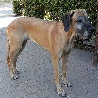
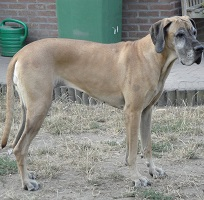
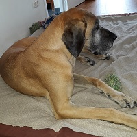

Yetta (Ankie) uit het Doggenwalhalla
- Teef - geel - NHSB 2871196
- Geboren op 13 februari 2012
Stamboom


Even voorstellen
Yetta is afkomstig uit ons A-nest. Ze heeft de eerste zes jaar van haar leven een fijne tijd doorgebracht bij haar nieuwe baasjes. Door omstandigheden kon ze daar helaas niet blijven en is ze in 2018 bij ons teruggekeerd. Ze is een aanhankelijke, lieve dog en kan het prima vinden met onze andere doggen. Ze is al wat op leeftijd, maar kan de jonge doggen nog prima bijhouden, al haakt ze af als het spel wat al te ruw wordt. Maar naast al die activiteit staat luieren op haar vaste plek op de bank in de woonkamer toch wel met stip op een.



